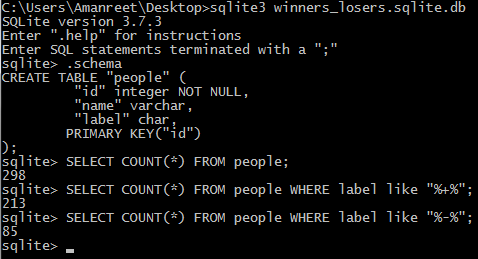
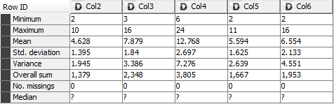
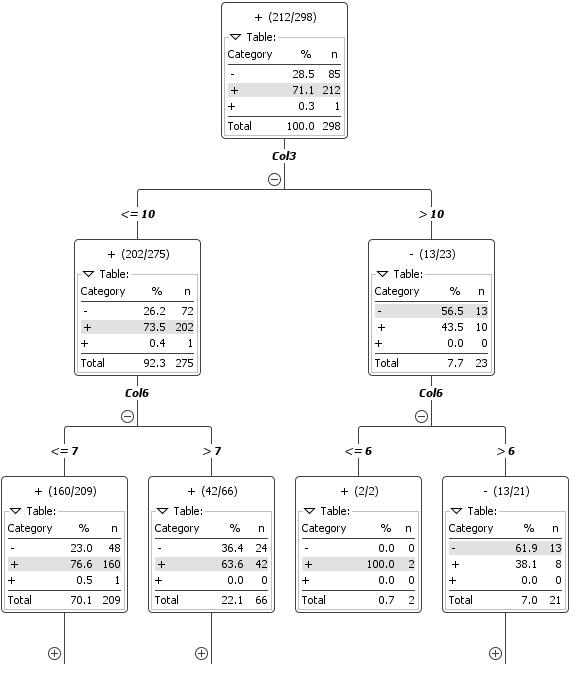
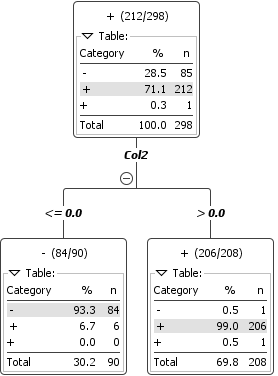
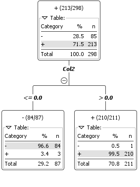

Data Mining Portfolio
Application: The Badges Problem
I started this project with the hints in mind and explored the data. First I use SQLite to query the database and see how many winners there were and how many losers there were.

Figure 1. Results of counts on the people database using SQLite
At this point I decided to actually take a look at the data provided. I spent some time trying to compare the winners to each other. I wasn’t getting anywhere at this point so I decided to think of some things I could compare between the two as a starting point. I started by putting together a list of attributes. My list consisted of the number of vowels in each name, the number of consonants in each name, the number of letters in the first name, the number of letters in the last name, and the total number of letters.

Table 1. Initial run of statistics in Knime
At first I started by creating a ruby program that found all of the previously listed attributes for each name and added them to the data. I decided to throw this into Knime and check what the statistics showed which wasn’t very helpful. These results of this are shown in Table 1. In Table 1 Col2 is the number of vowels in the name, Col3 is the number of consonants, Col4 is the number of letters in the first name, Col5 is the number of letters in the last name, and, finally, Col6 is the total number of letters in the name (does not include whitespace). This statistics table wasn’t very helpful because it didn’t show these statistics for the winners vs. the losers.
After this I decided to throw the data into Knime to generate a decision tree to see if any of the data I generated provided a good split. From the discussion we had in class on Wednesday it seemed like the solution would be obvious once found. In Figure 2 is my initial decision tree and the split from the initial data is not very good or an obvious solution therefore I don’t think any of my initial attributes are the solution.

Figure 2. Initial Decision Tree generated by Knime (the tree gets much bigger)
Since this approach wasn’t working I decided to go back to the drawing board. I did decide, for now, to keep these attributes in the data just in case. I spent some time with a few of the names in the beginning of the list comparing the similarities between the winners. At first I saw that the first few winners had a similar number of vowels but that theory was disproven quickly as I looked at more of the data for the winners. At this point I decided to look at pairs of letters in the names for the first few winners. That idea went in to the trash pretty quickly too since I couldn’t find a similarity between even a few of them.
At this point I decided to take a break from this project and go do something else and that’s when another idea hit me! Maybe it’s the combination of the first letter of the first name and the first letter of the last name! So I compared a few of them to see if there was any sort of pattern I could see with my naked eye. No luck there either. At this point I was getting a little frustrated and decided to take another break from the assignment.
When I came back to this project I had yet another thought. Maybe the solution has something to do with the placement of the letters and not the frequency, like I was thinking before. So I took the first names of the few winners and picked apart each letter and its placement in the name. I marked whether each letter was a vowel or consonant and what number letter it was in the alphabet, where a is 1 and z is 26. For the small set of data I looked at I couldn’t find a pattern in the letter numbers which I wasn’t sure would be a good attribute to begin with but I felt like I was running out of options. I did notice that all the winners I looked at had first names that started with a consonant followed by a vowel. I decided to add this attribute to my script to see how this theory faired with the rest of the data. I kept track of how many people were winners according to this metric in my Ruby script. It turns out 206 people were winners and had this property. There are 213 people in the database who are winners and I know there was some noise added to the data so this seems like a pretty good attribute compared to my previous attributes outcomes. I threw just this attribute into Knime and got a pretty good result. From the decision tree in Figure 3 it seems like out of the 208 people that have a value of 1 for the first letter consonant and second letter vowel attribute, 206 of them are winners. Although, it seems there is noise when it comes to the winner value because it shows a + with a space before it for one of the options instead of just showing two.

Figure 3. Knime generated decision tree run with the first letter consonant and second letter vowel binary attribute – contains some noise
This noise can be eliminated by stripping the winner/loser value in the data of whitespace which could result in a better decision tree so I went ahead and did that. This made the data a little less noisy when creating the decision tree. The new decision tree shows that 207 out of the 208 names that met the attribute requirement are winners and only one is a loser. On the other side where the attribute condition was not met are 90 names 6 of which are winners. I remember during class it was mentioned that something like 97 or 98% of the nodes should be classified correctly which isn’t the case with my attribute. At this point I thought maybe it’s dependent on only one of the conditions of my attribute. I decided to try each separately and see the results.

Figure 3. Knime generated decision tree run with the first letter consonant and second letter vowel binary attribute – contains some noise
First I tried only consonants as the first letter for the attribute. This gave me much worse results. With this as the attribute 270 names had the attribute and only 209 of those were winners and 61 were losers which seems a like a high value for noise. The one’s classified as losers were bad as well.
Then I tried checking the vowel as the second letter in the first name attribute. This gave me a great decision tree. Out of the 211 names with the attribute of a vowel for the second letter in the first name 210 were winners and only one was a loser. Out of the ones who did not have a vowel as the second letter in their first name only 3 were winners. I think this decision tree is as accurate as it could possibly be because there are only 4 points that are misclassified and they could very well be noise. This data can be seen in Figure 4. To verify that this was the right attribute I made my script print out all of the names of the misclassified winners/losers and they are all people from The Office.